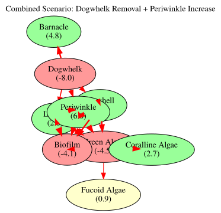

Bayesian Belief Networks for Ecology
Simon Frost
Introduction
Bayesian Belief Networks (BBNs) are widely used in ecology to model how perturbations propagate through species interaction networks. The R package bbnet provides tools for building and simulating such networks, using an interaction matrix where entries on a −4 to +4 scale encode how one species affects another (negative = suppression, positive = facilitation).
This vignette demonstrates how RDFLib.jl can:
- Represent a BBN as an RDF knowledge graph — species as nodes, weighted interactions as typed edges.
- Validate the network structure with SHACL.
- Query the network with SPARQL.
- Trace indirect interaction chains with property paths.
- Reason about network properties with Datalog.
- Model probabilistic outcomes with ProbLog.
- Simulate the bbnet propagation algorithm directly.
- Visualise the network with GraphViz.
We use two datasets from the bbnet package: a rocky shore intertidal community (9 species) and a marine protected area (MPA) management network (11 nodes).
using RDFLib
# Helper to extract readable string from SPARQL result values
readable(x::Literal) = x.lexical
readable(x::URIRef) = split(x.value, r"[/#]")[end]
readable(x) = string(x)readable (generic function with 3 methods)1. Rocky Shore BBN — Ontology
We define a lightweight BBN ontology: nodes have types (predator, grazer, sessile, primary producer) and directed weighted interactions.
g = RDFGraph()
bbn = Namespace("http://example.org/bbn#")
node = Namespace("http://example.org/node/")
bind!(g, "bbn", bbn)
bind!(g, "node", node)
# OWL classes
for cls in ["Node", "Predator", "Grazer", "Sessile", "PrimaryProducer",
"Interaction", "Scenario"]
add!(g, Triple(bbn(cls), RDF.type, OWL.Class))
end
# Subclass hierarchy: ecological roles are types of Node
for sub in ["Predator", "Grazer", "Sessile", "PrimaryProducer"]
add!(g, Triple(bbn(sub), RDFS.subClassOf, bbn("Node")))
end
# Properties
for (prop, dom, rng) in [
("hasInteraction", "Node", nothing),
("fromNode", "Interaction", "Node"),
("toNode", "Interaction", "Node"),
("weight", "Interaction", nothing),
("nodeType", "Node", nothing),
("scenarioName", "Scenario", nothing),
("perturbation", "Scenario", nothing),
]
uri = bbn(prop)
add!(g, Triple(uri, RDF.type, OWL.ObjectProperty))
add!(g, Triple(uri, RDFS.domain, bbn(dom)))
if rng !== nothing
add!(g, Triple(uri, RDFS.range, bbn(rng)))
end
end
println("Ontology: $(length(g)) triples")Ontology: 27 triples2. Populating the Rocky Shore Network
The rocky shore BBN from Stafford et al. (2015) models 9 species with interaction weights on a −4 to +4 scale. We encode the interaction matrix directly from the bbnet my_BBN dataset.
# Species: (name, id, type)
species = [
("Dogwhelk", "dogwhelk", "Predator"),
("Topshell", "topshell", "Grazer"),
("Limpet", "limpet", "Grazer"),
("Periwinkle", "periwinkle", "Grazer"),
("Barnacle", "barnacle", "Sessile"),
("Green Algae", "green_algae", "PrimaryProducer"),
("Biofilm", "biofilm", "PrimaryProducer"),
("Coralline Algae","coralline_algae","PrimaryProducer"),
("Fucoid Algae", "fucoid_algae", "PrimaryProducer"),
]
for (name, id, typ) in species
s = node(id)
add!(g, Triple(s, RDF.type, bbn("Node")))
add!(g, Triple(s, RDF.type, bbn(typ)))
add!(g, Triple(s, RDFS.label, Literal(name)))
end
# Interaction matrix from bbnet my_BBN dataset
# Rows = source (influencer), Cols = target (influenced)
# Order: Dogwhelk, Topshell, Limpet, Periwinkle, Barnacle,
# Green Algae, Biofilm, Coralline Algae, Fucoid Algae
# nothing = no interaction (NA in R)
interaction_matrix = [
# Dw Ts Li Pw Ba GA Bf CA FA
nothing -1 -2 -2 -3 nothing nothing nothing nothing; # Dogwhelk
nothing nothing -1 -1 nothing -3 -3 nothing nothing; # Topshell
nothing -2 nothing -2 nothing -4 -4 nothing nothing; # Limpet
nothing -1 -1 nothing nothing -3 -3 nothing nothing; # Periwinkle
nothing nothing nothing nothing nothing nothing nothing nothing nothing; # Barnacle
nothing nothing nothing nothing nothing nothing -2 -3 -1; # Green Algae
nothing nothing nothing nothing nothing nothing nothing nothing nothing; # Biofilm
nothing nothing nothing nothing nothing nothing nothing nothing nothing; # Coralline Algae
nothing nothing nothing nothing nothing nothing nothing nothing nothing; # Fucoid Algae
]
species_ids = [id for (_, id, _) in species]
interaction_count = 0
for i in 1:9, j in 1:9
w = interaction_matrix[i, j]
if w !== nothing
global interaction_count += 1
iid = "interaction_$(interaction_count)"
add!(g, Triple(bbn(iid), RDF.type, bbn("Interaction")))
add!(g, Triple(bbn(iid), bbn("fromNode"), node(species_ids[i])))
add!(g, Triple(bbn(iid), bbn("toNode"), node(species_ids[j])))
add!(g, Triple(bbn(iid), bbn("weight"), Literal(w)))
add!(g, Triple(node(species_ids[i]), bbn("hasInteraction"), bbn(iid)))
end
end
println("Rocky shore network: $(length(g)) triples, $interaction_count interactions")Rocky shore network: 149 triples, 19 interactions3. Scenarios
The bbnet package provides three perturbation scenarios for the rocky shore: removal of dogwhelk, increase in periwinkle, and a combined scenario.
scenarios = [
("Dogwhelk removal", [("dogwhelk", -4)]),
("Periwinkle increase", [("periwinkle", 3)]),
("Combined", [("dogwhelk", -4), ("periwinkle", 3)]),
]
for (name, perturbations) in scenarios
sid = replace(lowercase(name), " " => "_")
s = bbn(sid)
add!(g, Triple(s, RDF.type, bbn("Scenario")))
add!(g, Triple(s, RDFS.label, Literal(name)))
for (nid, val) in perturbations
add!(g, Triple(s, bbn("perturbation"), node(nid)))
add!(g, Triple(s, bbn("perturbationValue_$nid"), Literal(val)))
end
end
println("Total triples: $(length(g))")Total triples: 1634. SHACL Validation
We validate that every interaction has a valid weight (integer between −4 and +4), and that all nodes have labels.
shacl_ttl = """
@prefix sh: <http://www.w3.org/ns/shacl#> .
@prefix bbn: <http://example.org/bbn#> .
@prefix xsd: <http://www.w3.org/2001/XMLSchema#> .
@prefix rdfs: <http://www.w3.org/2000/01/rdf-schema#> .
bbn:InteractionShape a sh:NodeShape ;
sh:targetClass bbn:Interaction ;
sh:property [
sh:path bbn:fromNode ;
sh:minCount 1 ;
sh:maxCount 1 ;
] ;
sh:property [
sh:path bbn:toNode ;
sh:minCount 1 ;
sh:maxCount 1 ;
] ;
sh:property [
sh:path bbn:weight ;
sh:minCount 1 ;
sh:maxCount 1 ;
sh:datatype xsd:integer ;
sh:minInclusive -4 ;
sh:maxInclusive 4 ;
] .
bbn:NodeShape a sh:NodeShape ;
sh:targetClass bbn:Node ;
sh:property [
sh:path rdfs:label ;
sh:minCount 1 ;
sh:datatype xsd:string ;
] .
"""
shapes_graph = parse_rdf(shacl_ttl, TurtleFormat())
report = validate(g, shapes_graph)
println("SHACL valid: $(report.conforms)")
if !report.conforms
for v in report.results
println(" ⚠ $(v.message)")
end
endSHACL valid: true5. SPARQL Queries
5a. All interactions with their weights
results = sparql_query(g, """
PREFIX bbn: <http://example.org/bbn#>
PREFIX rdfs: <http://www.w3.org/2000/01/rdf-schema#>
SELECT ?from_name ?to_name ?w
WHERE {
?i a bbn:Interaction ;
bbn:fromNode ?from ;
bbn:toNode ?to ;
bbn:weight ?w .
?from rdfs:label ?from_name .
?to rdfs:label ?to_name .
}
ORDER BY ?from_name ?to_name
""")
println("Interaction | Weight")
println("─────────────────────|───────")
for row in results
from = readable(row["from_name"])
to = readable(row["to_name"])
w = readable(row["w"])
println(rpad("$from → $to", 21), "| ", w)
endInteraction | Weight
─────────────────────|───────
Dogwhelk → Barnacle | -3
Dogwhelk → Limpet | -2
Dogwhelk → Periwinkle| -2
Dogwhelk → Topshell | -1
Green Algae → Biofilm| -2
Green Algae → Coralline Algae| -3
Green Algae → Fucoid Algae| -1
Limpet → Biofilm | -4
Limpet → Green Algae | -4
Limpet → Periwinkle | -2
Limpet → Topshell | -2
Periwinkle → Biofilm | -3
Periwinkle → Green Algae| -3
Periwinkle → Limpet | -1
Periwinkle → Topshell| -1
Topshell → Biofilm | -3
Topshell → Green Algae| -3
Topshell → Limpet | -1
Topshell → Periwinkle| -15b. Node degrees — most connected species
results = sparql_query(g, """
PREFIX bbn: <http://example.org/bbn#>
PREFIX rdfs: <http://www.w3.org/2000/01/rdf-schema#>
SELECT ?name (COUNT(?i) AS ?out_degree)
WHERE {
?n a bbn:Node ;
rdfs:label ?name ;
bbn:hasInteraction ?i .
}
GROUP BY ?name
ORDER BY DESC(?out_degree)
""")
println("Species | Out-degree")
println("─────────────────|───────────")
for row in results
println(rpad(readable(row["name"]), 17), "| ", readable(row["out_degree"]))
endSpecies | Out-degree
─────────────────|───────────
Periwinkle | 4
Limpet | 4
Dogwhelk | 4
Topshell | 4
Green Algae | 35c. Strongest suppressors
results = sparql_query(g, """
PREFIX bbn: <http://example.org/bbn#>
PREFIX rdfs: <http://www.w3.org/2000/01/rdf-schema#>
SELECT ?from_name ?to_name ?w
WHERE {
?i a bbn:Interaction ;
bbn:fromNode ?from ;
bbn:toNode ?to ;
bbn:weight ?w .
?from rdfs:label ?from_name .
?to rdfs:label ?to_name .
FILTER(?w <= -3)
}
ORDER BY ?w
""")
println("Strong suppressions (weight ≤ −3):")
for row in results
println(" $(readable(row["from_name"])) ──$(readable(row["w"]))──▶ $(readable(row["to_name"]))")
endStrong suppressions (weight ≤ −3):
Limpet ──-4──▶ Biofilm
Limpet ──-4──▶ Green Algae
Periwinkle ──-3──▶ Biofilm
Dogwhelk ──-3──▶ Barnacle
Periwinkle ──-3──▶ Green Algae
Topshell ──-3──▶ Biofilm
Topshell ──-3──▶ Green Algae
Green Algae ──-3──▶ Coralline Algae6. Property Paths — Indirect Interaction Chains
Using property paths, we can find which species are indirectly connected through chains of interactions.
# Species reachable from Dogwhelk through any chain of interactions
results = sparql_query(g, """
PREFIX bbn: <http://example.org/bbn#>
PREFIX rdfs: <http://www.w3.org/2000/01/rdf-schema#>
PREFIX node: <http://example.org/node/>
SELECT DISTINCT ?target_name
WHERE {
node:dogwhelk bbn:hasInteraction/bbn:toNode+/bbn:hasInteraction*/bbn:toNode ?target .
?target rdfs:label ?target_name .
FILTER(?target != node:dogwhelk)
}
""")
println("Species reachable from Dogwhelk via interaction chains:")
for row in results
println(" → $(readable(row["target_name"]))")
endSpecies reachable from Dogwhelk via interaction chains:
→ Limpet
→ Periwinkle
→ Green Algae
→ Biofilm
→ Topshell7. Datalog Reasoning
We use Datalog to infer indirect effects: if A suppresses B and B suppresses C, then A indirectly benefits C through a trophic cascade. We encode the interactions and rules as N3.
# Build N3 with interactions and inference rules
n3_lines = String[]
push!(n3_lines, "@prefix bbn: <http://example.org/bbn#> .")
push!(n3_lines, "@prefix node: <http://example.org/node/> .")
push!(n3_lines, "")
# Encode suppression edges
for i in 1:9, j in 1:9
w = interaction_matrix[i, j]
if w !== nothing && w < 0
push!(n3_lines, "node:$(species_ids[i]) bbn:suppresses node:$(species_ids[j]) .")
end
end
# N3 inference rules for trophic cascades
push!(n3_lines, "")
push!(n3_lines, "# Transitive suppression")
push!(n3_lines, "{ ?X bbn:suppresses ?Y . ?Y bbn:suppresses ?Z } => { ?X bbn:indirectly_benefits ?Z } .")
push!(n3_lines, "# Two-step cascade")
push!(n3_lines, "{ ?X bbn:suppresses ?Y . ?Y bbn:suppresses ?Z . ?Z bbn:suppresses ?W } => { ?X bbn:cascade_benefits ?W } .")
n3_text = join(n3_lines, "\n")
g_dl = parse_rdf(n3_text, N3Format())
println("Before reasoning: $(length(g_dl)) triples")
g_inferred = datalog_reason(g_dl)
println("After reasoning: $(length(g_inferred)) triples")
# Find indirect benefits
benefits = collect(triples(g_inferred, (nothing, bbn("indirectly_benefits"), nothing)))
println("\nIndirect facilitation (A suppresses B, B suppresses C):")
for t in benefits
x = split(string(t.subject), '/')[end]
z = split(string(t.object), '/')[end]
println(" $x ──cascade──▶ $z")
endBefore reasoning: 21 triples
After reasoning: 81 triples
Indirect facilitation (A suppresses B, B suppresses C):
dogwhelk ──cascade──▶ limpet
dogwhelk ──cascade──▶ periwinkle
dogwhelk ──cascade──▶ biofilm
dogwhelk ──cascade──▶ green_algae
dogwhelk ──cascade──▶ topshell
topshell ──cascade──▶ topshell
topshell ──cascade──▶ periwinkle
topshell ──cascade──▶ biofilm
topshell ──cascade──▶ green_algae
topshell ──cascade──▶ limpet
topshell ──cascade──▶ fucoid_algae
topshell ──cascade──▶ coralline_algae
limpet ──cascade──▶ limpet
limpet ──cascade──▶ periwinkle
limpet ──cascade──▶ biofilm
limpet ──cascade──▶ green_algae
limpet ──cascade──▶ topshell
limpet ──cascade──▶ fucoid_algae
limpet ──cascade──▶ coralline_algae
periwinkle ──cascade──▶ limpet
periwinkle ──cascade──▶ periwinkle
periwinkle ──cascade──▶ biofilm
periwinkle ──cascade──▶ green_algae
periwinkle ──cascade──▶ topshell
periwinkle ──cascade──▶ fucoid_algae
periwinkle ──cascade──▶ coralline_algae8. BBN Propagation Algorithm
The core bbnet algorithm converts the −4 to +4 scale to probabilities (0.1–0.9), then iteratively propagates perturbations using Bayesian combination rules from Stafford et al. (2015).
"""
Convert bbnet integer scale (-4 to +4) to probability (0.1 to 0.9).
0 maps to 0.5 (no change).
"""
function scale_to_prob(x::Int)
mapping = Dict(-4=>0.1, -3=>0.2, -2=>0.3, -1=>0.4,
0=>0.5, 1=>0.6, 2=>0.7, 3=>0.8, 4=>0.9)
return mapping[x]
end
"""
Convert probability back to bbnet scale for display.
"""
function prob_to_scale(p::Float64)
if p ≈ 0.5
return 0.0
elseif p > 0.5
return (p - 0.5) / 0.05 # linear interpolation
else
return -(0.5 - p) / 0.05
end
end
"""
Combine multiple posterior probabilities using bbnet's combination rule
(Stafford et al. 2015): if posteriors tend upward, combine additively
to increase certainty; if downward, combine to decrease.
"""
function combine_posteriors(posteriors::Vector{Float64})
isempty(posteriors) && return 0.5
all(p -> p ≈ 0.5, posteriors) && return 0.5
μ = sum(posteriors) / length(posteriors)
if μ >= 0.5
sorted = sort(posteriors, rev=true)
result = sorted[1]
for i in 2:length(sorted)
result = result + (sorted[i] - 0.5) * (1.0 - result)
end
else
sorted = sort(posteriors)
result = sorted[1]
for i in 2:length(sorted)
result = result - (0.5 - sorted[i]) * result
end
end
return result
end
"""
Run bbnet BBN propagation.
Arguments:
- `interaction`: N×N matrix (nothing for no interaction, integer weight otherwise)
- `priors`: Vector of initial perturbation values (-4 to +4 scale, 0 = no change)
- `iterations`: Number of propagation steps (default 4, as in bbnet)
Returns: Vector of final posterior probabilities for each node.
"""
function bbn_propagate(interaction::Matrix, priors::Vector{Int};
iterations::Int=4)
n = size(interaction, 1)
# Convert interaction matrix to probability scale
prob_matrix = Matrix{Union{Nothing, Float64}}(nothing, n, n)
for i in 1:n, j in 1:n
if interaction[i,j] !== nothing
prob_matrix[i,j] = scale_to_prob(interaction[i,j])
end
end
# Convert priors to probability
state = [scale_to_prob(p) for p in priors]
# Store trajectory
trajectory = zeros(n, iterations)
trajectory[:, 1] = state
for iter in 2:iterations
new_state = copy(state)
for j in 1:n # for each target node
posteriors = Float64[]
for i in 1:n # for each source node
if prob_matrix[i,j] !== nothing
# Bayes: P(target↑|source) × P(source↑) + P(target↑|source↓) × P(source↓)
p_inc = prob_matrix[i,j]
p_dec = 1.0 - p_inc
posterior = p_inc * state[i] + p_dec * (1.0 - state[i])
push!(posteriors, posterior)
end
end
if isempty(posteriors)
new_state[j] = state[j]
else
combined = combine_posteriors(posteriors)
# Only move further from 0.5 than current state
if state[j] > 0.5 && combined > state[j]
new_state[j] = combined
elseif state[j] < 0.5 && combined < state[j]
new_state[j] = combined
elseif state[j] ≈ 0.5
new_state[j] = combined
else
new_state[j] = state[j]
end
end
end
state = new_state
trajectory[:, iter] = state
end
return state, trajectory
end
println("BBN propagation engine defined ✓")BBN propagation engine defined ✓8a. Scenario: Dogwhelk Removal
names = [n for (n, _, _) in species]
# Dogwhelk removal: -4 for dogwhelk, 0 for all others
dogwhelk_priors = [-4, 0, 0, 0, 0, 0, 0, 0, 0]
state, traj = bbn_propagate(interaction_matrix, dogwhelk_priors)
println("Dogwhelk Removal Scenario")
println("─────────────────────────────────────────")
println(rpad("Species", 20), rpad("Prior", 8), rpad("Posterior", 10), "Δ Scale")
println("─"^50)
for i in 1:9
prior_p = scale_to_prob(dogwhelk_priors[i])
posterior_p = state[i]
delta = prob_to_scale(posterior_p)
marker = abs(delta) > 0.5 ? (delta > 0 ? " ↑" : " ↓") : ""
println(rpad(names[i], 20),
rpad(round(prior_p, digits=3), 8),
rpad(round(posterior_p, digits=3), 10),
round(delta, digits=1), marker)
endDogwhelk Removal Scenario
─────────────────────────────────────────
Species Prior Posterior Δ Scale
──────────────────────────────────────────────────
Dogwhelk 0.1 0.1 -8.0 ↓
Topshell 0.5 0.58 1.6 ↑
Limpet 0.5 0.66 3.2 ↑
Periwinkle 0.5 0.66 3.2 ↑
Barnacle 0.5 0.74 4.8 ↑
Green Algae 0.5 0.32 -3.6 ↓
Biofilm 0.5 0.32 -3.6 ↓
Coralline Algae 0.5 0.608 2.2 ↑
Fucoid Algae 0.5 0.536 0.7 ↑8b. Scenario: Periwinkle Increase
winkle_priors = [0, 0, 0, 3, 0, 0, 0, 0, 0]
state, traj = bbn_propagate(interaction_matrix, winkle_priors)
println("Periwinkle Increase Scenario")
println("─────────────────────────────────────────")
println(rpad("Species", 20), rpad("Prior", 8), rpad("Posterior", 10), "Δ Scale")
println("─"^50)
for i in 1:9
prior_p = scale_to_prob(winkle_priors[i])
delta = prob_to_scale(state[i])
marker = abs(delta) > 0.5 ? (delta > 0 ? " ↑" : " ↓") : ""
println(rpad(names[i], 20),
rpad(round(prior_p, digits=3), 8),
rpad(round(state[i], digits=3), 10),
round(delta, digits=1), marker)
endPeriwinkle Increase Scenario
─────────────────────────────────────────
Species Prior Posterior Δ Scale
──────────────────────────────────────────────────
Dogwhelk 0.5 0.5 0.0
Topshell 0.5 0.44 -1.2 ↓
Limpet 0.5 0.44 -1.2 ↓
Periwinkle 0.8 0.8 6.0 ↑
Barnacle 0.5 0.5 0.0
Green Algae 0.5 0.32 -3.6 ↓
Biofilm 0.5 0.32 -3.6 ↓
Coralline Algae 0.5 0.608 2.2 ↑
Fucoid Algae 0.5 0.536 0.7 ↑8c. Combined Scenario
combined_priors = [-4, 0, 0, 3, 0, 0, 0, 0, 0]
state, traj = bbn_propagate(interaction_matrix, combined_priors)
println("Combined Scenario (Dogwhelk removal + Periwinkle increase)")
println("─────────────────────────────────────────")
println(rpad("Species", 20), rpad("Prior", 8), rpad("Posterior", 10), "Δ Scale")
println("─"^50)
for i in 1:9
prior_p = scale_to_prob(combined_priors[i])
delta = prob_to_scale(state[i])
marker = abs(delta) > 0.5 ? (delta > 0 ? " ↑" : " ↓") : ""
println(rpad(names[i], 20),
rpad(round(prior_p, digits=3), 8),
rpad(round(state[i], digits=3), 10),
round(delta, digits=1), marker)
endCombined Scenario (Dogwhelk removal + Periwinkle increase)
─────────────────────────────────────────
Species Prior Posterior Δ Scale
──────────────────────────────────────────────────
Dogwhelk 0.1 0.1 -8.0 ↓
Topshell 0.5 0.555 1.1 ↑
Limpet 0.5 0.64 2.8 ↑
Periwinkle 0.8 0.8 6.0 ↑
Barnacle 0.5 0.74 4.8 ↑
Green Algae 0.5 0.275 -4.5 ↓
Biofilm 0.5 0.295 -4.1 ↓
Coralline Algae 0.5 0.635 2.7 ↑
Fucoid Algae 0.5 0.545 0.9 ↑9. ProbLog — Probabilistic Interaction Modeling
We can model the BBN interactions as probabilistic logic rules. Each interaction becomes a probabilistic fact encoding how likely one species is to affect another.
# Build ProbLog program from interaction matrix
problog_lines = String[]
# Encode each interaction as a probabilistic fact
for i in 1:9, j in 1:9
w = interaction_matrix[i, j]
if w !== nothing
# Convert weight to probability (0.1-0.9)
p = scale_to_prob(w)
src = species_ids[i]
tgt = species_ids[j]
push!(problog_lines, "$(p)::suppresses($src, $tgt).")
end
end
# Add rules for cascade effects
push!(problog_lines, "")
push!(problog_lines, "cascade(X, Z) :- suppresses(X, Y), suppresses(Y, Z).")
push!(problog_lines, "long_cascade(X, W) :- suppresses(X, Y), suppresses(Y, Z), suppresses(Z, W).")
# Queries
push!(problog_lines, "")
push!(problog_lines, "query(cascade(dogwhelk, X)).")
push!(problog_lines, "query(long_cascade(dogwhelk, X)).")
problog_program = join(problog_lines, "\n")
println("ProbLog program ($(length(problog_lines)) lines):")
println(problog_program[1:min(500, length(problog_program))])
println("...")ProbLog program (25 lines):
0.4::suppresses(dogwhelk, topshell).
0.3::suppresses(dogwhelk, limpet).
0.3::suppresses(dogwhelk, periwinkle).
0.2::suppresses(dogwhelk, barnacle).
0.4::suppresses(topshell, limpet).
0.4::suppresses(topshell, periwinkle).
0.2::suppresses(topshell, green_algae).
0.2::suppresses(topshell, biofilm).
0.3::suppresses(limpet, topshell).
0.3::suppresses(limpet, periwinkle).
0.1::suppresses(limpet, green_algae).
0.1::suppresses(limpet, biofilm).
0.4::suppresses(periwinkle, topshell).
0.4::suppresses(per
...# Run ProbLog inference
prob_results = problog_query(problog_program)
println("\nProbLog: Cascade effects from Dogwhelk")
println("───────────────────────────────────────")
for (atom, prob) in sort(collect(prob_results), by=x->x[2], rev=true)
if prob > 0.001
println(" $(rpad(atom, 45)) P = $(round(prob, digits=4))")
end
endProbLog: Cascade effects from Dogwhelk
───────────────────────────────────────
cascade(dogwhelk,limpet) P = 0.2608
cascade(dogwhelk,periwinkle) P = 0.2356
cascade(dogwhelk,topshell) P = 0.1992
long_cascade(dogwhelk,limpet) P = 0.1642
long_cascade(dogwhelk,topshell) P = 0.1614
cascade(dogwhelk,biofilm) P = 0.1611
cascade(dogwhelk,green_algae) P = 0.1611
long_cascade(dogwhelk,periwinkle) P = 0.1486
long_cascade(dogwhelk,biofilm) P = 0.1475
long_cascade(dogwhelk,green_algae) P = 0.1073
long_cascade(dogwhelk,fucoid_algae) P = 0.0645
long_cascade(dogwhelk,coralline_algae) P = 0.032210. MPA Network
The marine protected area (MPA) network from bbnet models the effects of fishery management on a marine ecosystem with 11 nodes including fisheries, species, and economic outcomes.
mpa_g = RDFGraph()
mpa = Namespace("http://example.org/mpa#")
mn = Namespace("http://example.org/mpa/node/")
bind!(mpa_g, "mpa", mpa)
bind!(mpa_g, "mn", mn)
mpa_species = [
("Lobster fishery", "lobster_fishery"),
("Finfish fishery", "finfish_fishery"),
("Fish density", "fish_density"),
("Seals", "seals"),
("Lobster Recruitment","lobster_recruitment"),
("Divers", "divers"),
("Spiny lobster", "spiny_lobster"),
("Lobster", "lobster"),
("Snails", "snails"),
("Algae", "algae"),
("Revenue", "revenue"),
]
for (name, id) in mpa_species
s = mn(id)
add!(mpa_g, Triple(s, RDF.type, mpa("Node")))
add!(mpa_g, Triple(s, RDFS.label, Literal(name)))
end
# MPA interaction matrix (from bbnet MPANetwork)
mpa_matrix = [
# LobF FinF Fish Seal LobR Div SpLob Lob Sna Alg Rev
nothing nothing nothing nothing nothing nothing -3 -4 nothing nothing 4; # Lobster fishery
nothing nothing -3 nothing nothing nothing nothing nothing nothing nothing 3; # Finfish fishery
nothing nothing nothing 3 -2 nothing nothing nothing nothing nothing nothing; # Fish density
nothing nothing -2 nothing nothing nothing -3 -3 nothing nothing nothing; # Seals
nothing nothing nothing nothing nothing nothing 4 4 nothing nothing nothing; # Lobster Recruitment
nothing nothing nothing nothing nothing nothing -1 -2 nothing nothing 3; # Divers
nothing nothing nothing nothing nothing 3 nothing -1 -3 nothing nothing; # Spiny lobster
nothing nothing nothing nothing nothing 3 -1 nothing -3 nothing nothing; # Lobster
nothing nothing nothing nothing nothing nothing 3 3 nothing -2 nothing; # Snails
3 nothing nothing nothing nothing nothing 3 3 3 nothing nothing; # Algae
nothing nothing nothing nothing nothing nothing nothing nothing nothing nothing nothing; # Revenue
]
mpa_ids = [id for (_, id) in mpa_species]
mpa_interaction_count = 0
for i in 1:11, j in 1:11
w = mpa_matrix[i, j]
if w !== nothing
global mpa_interaction_count += 1
iid = "mpa_int_$(mpa_interaction_count)"
add!(mpa_g, Triple(mpa(iid), RDF.type, mpa("Interaction")))
add!(mpa_g, Triple(mpa(iid), mpa("fromNode"), mn(mpa_ids[i])))
add!(mpa_g, Triple(mpa(iid), mpa("toNode"), mn(mpa_ids[j])))
add!(mpa_g, Triple(mpa(iid), mpa("weight"), Literal(w)))
end
end
println("MPA network: $(length(mpa_g)) triples, $mpa_interaction_count interactions")MPA network: 134 triples, 28 interactions10a. MPA Scenario: No Potting
mpa_names = [n for (n, _) in mpa_species]
# No potting: lobster fishery -4
no_potting_priors = [-4, 0, 0, 0, 0, 0, 0, 0, 0, 0, 0]
state, _ = bbn_propagate(mpa_matrix, no_potting_priors)
println("No Potting Scenario (Lobster fishery closed)")
println("─────────────────────────────────────────────")
println(rpad("Node", 24), rpad("Prior", 8), rpad("Posterior", 10), "Δ Scale")
println("─"^55)
for i in 1:11
prior_p = scale_to_prob(no_potting_priors[i])
delta = prob_to_scale(state[i])
marker = abs(delta) > 0.5 ? (delta > 0 ? " ↑" : " ↓") : ""
println(rpad(mpa_names[i], 24),
rpad(round(prior_p, digits=3), 8),
rpad(round(state[i], digits=3), 10),
round(delta, digits=1), marker)
endNo Potting Scenario (Lobster fishery closed)
─────────────────────────────────────────────
Node Prior Posterior Δ Scale
───────────────────────────────────────────────────────
Lobster fishery 0.1 0.1 -8.0 ↓
Finfish fishery 0.5 0.5 0.0
Fish density 0.5 0.5 0.0
Seals 0.5 0.5 0.0
Lobster Recruitment 0.5 0.5 0.0
Divers 0.5 0.736 4.7 ↑
Spiny lobster 0.5 0.74 4.8 ↑
Lobster 0.5 0.82 6.4 ↑
Snails 0.5 0.264 -4.7 ↓
Algae 0.5 0.595 1.9 ↑
Revenue 0.5 0.18 -6.4 ↓10b. MPA Scenario: No Take Zone
# No take: both fisheries -4
no_take_priors = [-4, -4, 0, 0, 0, 0, 0, 0, 0, 0, 0]
state, _ = bbn_propagate(mpa_matrix, no_take_priors)
println("No Take Zone Scenario (Both fisheries closed)")
println("─────────────────────────────────────────────")
println(rpad("Node", 24), rpad("Prior", 8), rpad("Posterior", 10), "Δ Scale")
println("─"^55)
for i in 1:11
prior_p = scale_to_prob(no_take_priors[i])
delta = prob_to_scale(state[i])
marker = abs(delta) > 0.5 ? (delta > 0 ? " ↑" : " ↓") : ""
println(rpad(mpa_names[i], 24),
rpad(round(prior_p, digits=3), 8),
rpad(round(state[i], digits=3), 10),
round(delta, digits=1), marker)
endNo Take Zone Scenario (Both fisheries closed)
─────────────────────────────────────────────
Node Prior Posterior Δ Scale
───────────────────────────────────────────────────────
Lobster fishery 0.1 0.1 -8.0 ↓
Finfish fishery 0.1 0.1 -8.0 ↓
Fish density 0.5 0.74 4.8 ↑
Seals 0.5 0.644 2.9 ↑
Lobster Recruitment 0.5 0.404 -1.9 ↓
Divers 0.5 0.736 4.7 ↑
Spiny lobster 0.5 0.74 4.8 ↑
Lobster 0.5 0.82 6.4 ↑
Snails 0.5 0.264 -4.7 ↓
Algae 0.5 0.595 1.9 ↑
Revenue 0.5 0.137 -7.3 ↓10c. Comparing Management Scenarios
println("Scenario Comparison: Key nodes")
println("═══════════════════════════════════════════════════════")
println(rpad("Node", 24), rpad("No Potting", 14), "No Take")
println("─"^50)
st_nopot, _ = bbn_propagate(mpa_matrix, no_potting_priors)
st_notake, _ = bbn_propagate(mpa_matrix, no_take_priors)
for i in 1:11
d1 = prob_to_scale(st_nopot[i])
d2 = prob_to_scale(st_notake[i])
m1 = abs(d1) > 0.5 ? (d1 > 0 ? "↑" : "↓") : "─"
m2 = abs(d2) > 0.5 ? (d2 > 0 ? "↑" : "↓") : "─"
println(rpad(mpa_names[i], 24),
rpad("$(round(d1, digits=1)) $m1", 14),
"$(round(d2, digits=1)) $m2")
endScenario Comparison: Key nodes
═══════════════════════════════════════════════════════
Node No Potting No Take
──────────────────────────────────────────────────
Lobster fishery -8.0 ↓ -8.0 ↓
Finfish fishery 0.0 ─ -8.0 ↓
Fish density 0.0 ─ 4.8 ↑
Seals 0.0 ─ 2.9 ↑
Lobster Recruitment 0.0 ─ -1.9 ↓
Divers 4.7 ↑ 4.7 ↑
Spiny lobster 4.8 ↑ 4.8 ↑
Lobster 6.4 ↑ 6.4 ↑
Snails -4.7 ↓ -4.7 ↓
Algae 1.9 ↑ 1.9 ↑
Revenue -6.4 ↓ -7.3 ↓11. Visualisation
11a. Rocky Shore Network
using GraphViz
function bbn_to_dot(names, matrix; title="BBN")
n = length(names)
lines = String[]
push!(lines, "digraph BBN {")
push!(lines, " label=\"$title\";")
push!(lines, " labelloc=t;")
push!(lines, " fontsize=14;")
push!(lines, " node [shape=ellipse, style=filled, fillcolor=lightyellow];")
for i in 1:n
id = replace(names[i], " " => "_")
push!(lines, " $id [label=\"$(names[i])\"];")
end
for i in 1:n, j in 1:n
w = matrix[i, j]
if w !== nothing
src = replace(names[i], " " => "_")
tgt = replace(names[j], " " => "_")
color = w < 0 ? "red" : "blue"
penwidth = max(1.0, abs(w) * 1.0)
push!(lines, " $src -> $tgt [color=$color, penwidth=$penwidth, label=\"$w\"];")
end
end
push!(lines, "}")
return join(lines, "\n")
end
dot_str = bbn_to_dot([n for (n, _, _) in species], interaction_matrix;
title="Rocky Shore BBN")
GraphViz.load(IOBuffer(dot_str))
11b. MPA Network
dot_str = bbn_to_dot([n for (n, _) in mpa_species], mpa_matrix;
title="Marine Protected Area BBN")
GraphViz.load(IOBuffer(dot_str))
11c. Scenario Impact Diagram
We visualise the combined dogwhelk/periwinkle scenario by colouring nodes according to their predicted change.
function scenario_to_dot(names, matrix, priors; title="Scenario")
state, _ = bbn_propagate(matrix, priors)
n = length(names)
lines = String[]
push!(lines, "digraph Scenario {")
push!(lines, " label=\"$title\";")
push!(lines, " labelloc=t;")
push!(lines, " fontsize=14;")
push!(lines, " node [shape=ellipse, style=filled];")
for i in 1:n
id = replace(names[i], " " => "_")
delta = prob_to_scale(state[i])
# Color: red = decrease, green = increase, yellow = neutral
if delta < -1.0
color = "\"#ff9999\""
elseif delta > 1.0
color = "\"#99ff99\""
else
color = "\"#ffffcc\""
end
label = "$(names[i])\\n($(round(delta, digits=1)))"
push!(lines, " $id [label=\"$label\", fillcolor=$color];")
end
for i in 1:n, j in 1:n
w = matrix[i, j]
if w !== nothing
src = replace(names[i], " " => "_")
tgt = replace(names[j], " " => "_")
color = w < 0 ? "red" : "blue"
penwidth = max(1.0, abs(w) * 0.8)
push!(lines, " $src -> $tgt [color=$color, penwidth=$penwidth];")
end
end
push!(lines, "}")
return join(lines, "\n")
end
dot_str = scenario_to_dot([n for (n, _, _) in species], interaction_matrix,
combined_priors;
title="Combined Scenario: Dogwhelk Removal + Periwinkle Increase")
GraphViz.load(IOBuffer(dot_str))
12. Summary
This vignette demonstrated how RDFLib.jl integrates with ecological BBN analysis:
| Feature | Application |
|---|---|
| OWL ontology | BBN node types and interaction semantics |
| RDF graph | Species interactions as typed, weighted edges |
| SHACL | Validation of interaction weights and node labels |
| SPARQL | Query interactions, degrees, strongest effects |
| Property paths | Trace indirect interaction chains |
| Datalog | Infer trophic cascades and indirect facilitation |
| ProbLog | Probabilistic cascade modelling |
| BBN propagation | Stafford et al. (2015) algorithm for scenario analysis |
| GraphViz | Network and scenario impact visualisation |
Key ecological findings from the BBN analysis: - Dogwhelk removal leads to increased grazer populations, which suppress primary producers (trophic cascade). - No-take zones (both fisheries closed) benefit lobster populations and overall ecosystem health, with positive effects on divers and algae through reduced fishing pressure. - The combined rocky shore scenario shows complex interactions where dogwhelk removal and periwinkle increase have competing effects on shared prey species.
References
- Stafford, R., Williams, R.L. & Herbert, R.J.H. (2015). Simple, intuitive and accessible Bayesian Belief Network software for non-specialists. Methods in Ecology and Evolution.
- Sherring, A. et al. (2024). A Bayesian Belief Network approach to assess conservation evidence within applied ecology. bioRxiv, 2024.06.12.598033.